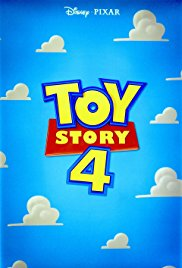
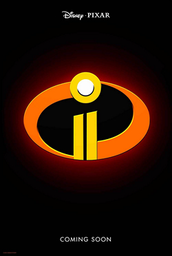

We've all heard of Pixar Animation Studios. It's the company that revolutionized the world of animation. Pixar has almost never failed to deliver quality content, and has made many technological breakthroughs since its conception in 1986. It has set a high standard for family-friendly movies, with almost all of its works lauded with critical acclaim and gaining cult status. Even despite its near legendary status, the infamous animation powerhouse had a very rocky start.
Pixar is an American computer animation studio located in Emeryville, California. It is a subsidiary of the business conglomerate Disney, another well known entertainment company also known for its animated features. This company was founded in 1979, but did not become the "Pixar" we know today until 1986.
As of 2018, 19 feature films have been created by Pixar, dating from 1996, with Toy Story, its first feature film, and also the world's first computer animated full-length feature film. The company has also made several animated shorts that accompany their films (a Disney/Pixar tradition), TV specials, advertisements among others.
Over the years, the company has won numerous accolades and distinctions for their masterful storytelling and gorgeous animation. To date, Pixar has won 19 Academy Awards, 8 Golden Globe Awards, and 11 Grammy Awards; all coveted prizes in the film and music industries. Pixar has won 9 Academy Awards for Best Picture, since the category was created in 2001.
Unlike other film studios, many of Pixar's films focus on the human condition, what it means to be human; however, these traits are characterized in not only humans, but animals and inanimate subjects too. The films that this company makes hit close to home because they are about people. They are not just loves stories. The reason why Pixar appeals to ages young and old is because it appeals to the human heart, because it tells us the truth about ourselves in a compelling, visual format. Many of the stories that the studio has created are those about family, courage and hope. Characters in Pixar movies are not 2-dimensional, besides from a literal sense. There is a humanity, a person, an amalgamation of traits sewn together that reflect, in our eyes, a person in the real world.
Like the infamous Japanese animation studio Studio Ghibli (creators of the widely acclaimed My Neighbour Totoro and Spirited Away), Pixar tells ordinary stories with extraordinary elements. Their films can be down-to-earth, surreal, bold and traditional. But one thing all Pixar films are, is that they are love letters to humankind, appealing to the inner child within all of us, wide-eyed, looking out into the world with wonder.
Currently two films are in the making. One is Incredibles 2, the much-awaited sequel to the smash-hit The Incredibles from 2004, coming out in June 2018. Toy Story 4, yet another sequel to one of the highest grossing film franchises of all time, is set for release sometime in 2019.
  Pixar Home Page
Benazir is a student enrolled in the ICS course at Victoria Park Collegiate Institute. She is a fan of anything and everything related to animation, comics and the arts.
Home References Glossary